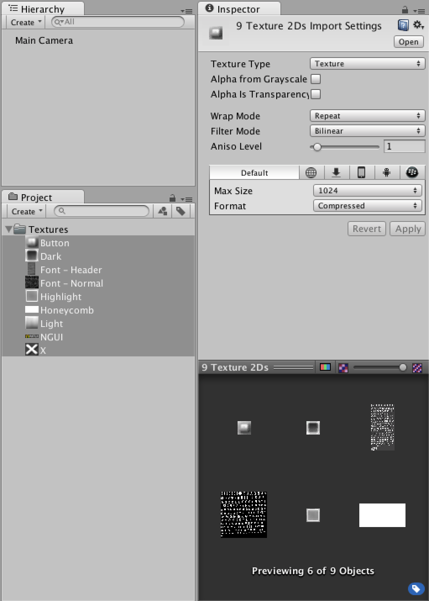
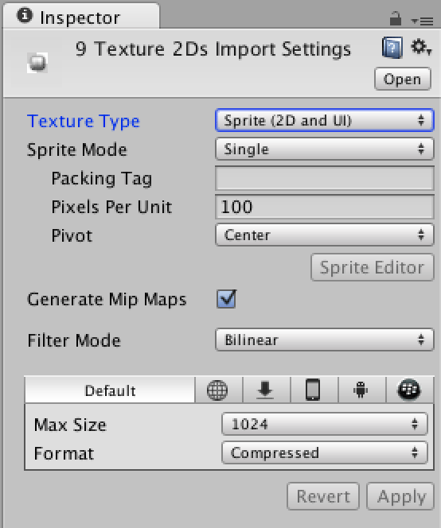
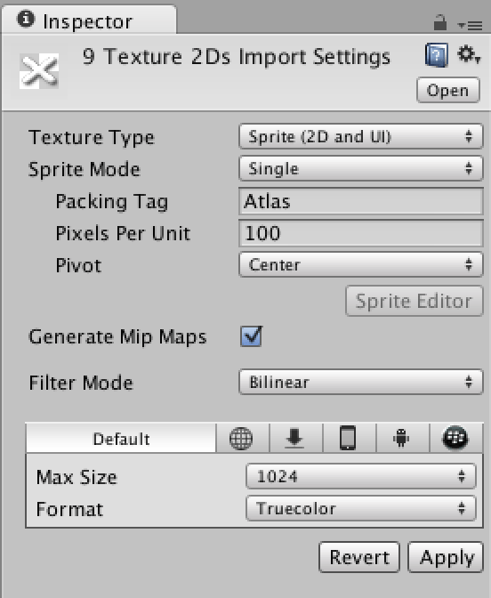
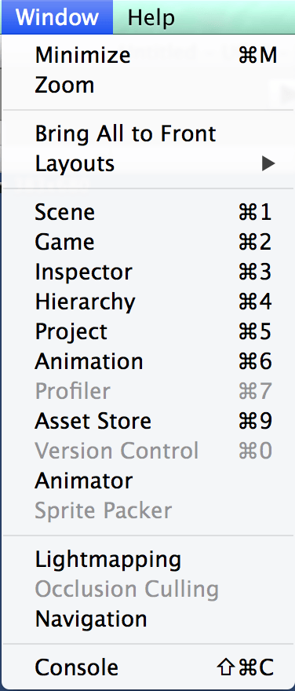
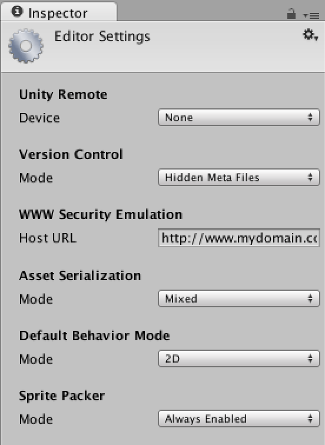

uGUI 是 Unity 從 4.6 開始推出的內建 UI 系統
這個系列主要是讓大家能夠了解 uGUI的基礎操作流程
一開始這邊提取了 NGUI 內建圖集中的圖片來作為教學中的示範

將 Texture Type 切換為 Sprite (2D and UI)

這個步驟是將貼圖的形態轉換
按下 Apply 後貼圖形態就會轉換成功
接下來看一下 Sprite (2D and UI) 裡的參數
Sprite Mode : 選擇圖片提取方式
Single : 單獨圖片
Multiple : 圖片中包含多個關聯圖片
PackingTag : 圖片打包標簽
Pixels Per Unit : 單位像素大小
Pivot : 圖片中心
詳細請看官方講解
http://docs.unity3d.com/Manual/class-TextureImporter.html
接下來進行製作圖集的動作
將 Sprite Mode 切換為 Single
並將 Packing Tag 設定為 Atlas (隨意命名)

按下 Apply 後一定會有個疑問
為什麼好像什麼都沒發生…
讓我們開啟 Sprite Packer 看看有什麼發生
若是點選 Window 發現 Sprite Packer 無法選取

到 Edit -> Project Settings -> Editor
將 Sprite Packer 切換為 Always Enabled

如果切換了還是無法打開 Sprite Packer 是因為這功能只支持 Pro 版…..
在 4.6 中 Sprite Packer 需要 pro licence 才能開啟
而 5.0 後的版本則不需要 pro licence
所以我也無法開啟 Sprite Packer 視窗
開啟後
點選 Pack 按鈕後
Unity 就會自動進行打包